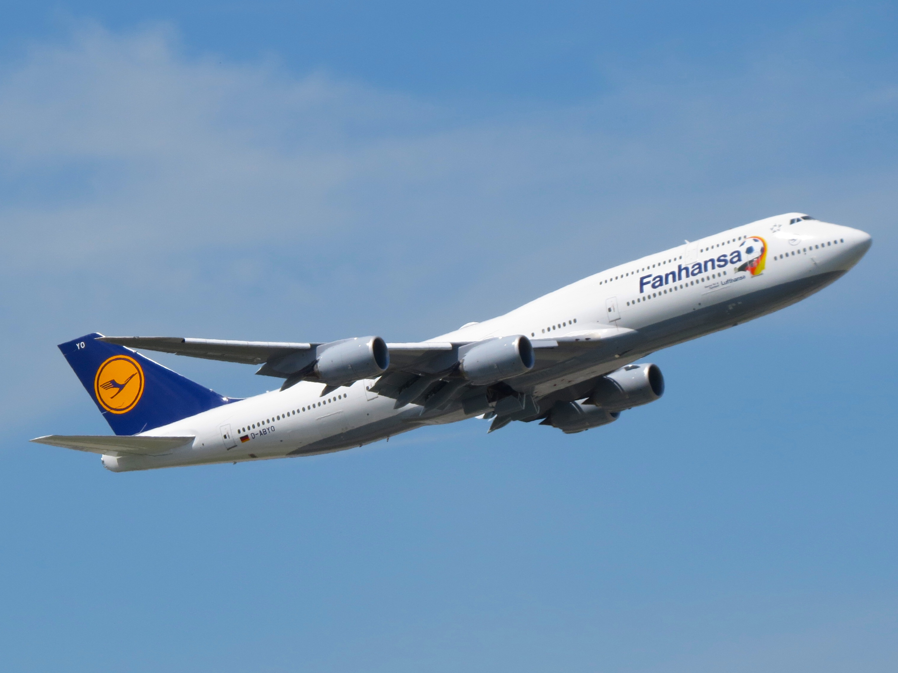

案例发生了什么
谁参与Lufthansa
发生节点 / 场景2014 巴西世界杯；德国/全球；非官方/国家队情绪
传播形式服务载体改名型；赛果升级型；球队出行场景型
传播核心世界杯前，汉莎把多架飞机机身上的 Lufthansa 临时改为 Fanhansa，让真实航班变成移动媒体；德国夺冠后，接球队回国的飞机再升级为 Siegerflieger（胜利者航班），把赛果直接写进运输服务本身。


世界杯前，汉莎把多架飞机机身上的 Lufthansa 临时改为 Fanhansa，让真实航班变成移动媒体；德国夺冠后，接球队回国的飞机再升级为 Siegerflieger（胜利者航班），把赛果直接写进运输服务本身。
赛前以 Fanhansa 涂装制造机场和城市可见度，并围绕机票、球衣和球迷任务做互动；德国夺冠后，将接球队回国的波音 747-8 命名为 Siegerflieger，凯旋航班、机场迎接和新闻画面形成第二幕。
MARKETING KNOWLEDGE ROUTER · 营销知识路由器
营销启发卡
把历届经典的记忆点、商业结构和迁移方法放在同一层阅读。 卡片底部按主题连接全站相关案例、经典方法与深度文章。
01核心动作
同一架飞机从“球迷航空”升级成“冠军航班”
国家队出征与凯旋的仪式感、球迷与同一架飞机共同见证冠军旅程的历史感；同一架飞机从“球迷航空”升级成“冠军航班”，把出征和凯旋连成完整剧情。
02传播与商业机制
航空公司不需要虚构“带球队回家”的角色
航空公司不需要虚构“带球队回家”的角色：飞机、航线和机组就是它能交付的真实资源，机身改名让服务功能同时成为内容；赛前以 Fanhansa 涂装制造机场和城市可见度，并围绕机票、球衣和球迷任务做互动；德国夺冠后，将接球队回国的波音 747-8 命名为 Siegerflieger，凯旋航班、机场迎接和新闻画面形成第二幕。
03可复用的方法
服务品牌最有说服力的营销资产通常就是运力、路线、场站和员工
服务品牌最有说服力的营销资产通常就是运力、路线、场站和员工；根据赛程改变服务命名，可以让真实运营成为连续内容。
适用条件、风险与证据
- 国家队运输、机身标识和机场活动涉及航空安全、官方授权与航班调度；胜负分支必须在赛前准备，不能临时牺牲运营。
- 后续复盘还应补齐发布主体、时间线、真实执行图、媒介范围和结果口径；没有这些证据时，不把行业评价或赛事总热度写成品牌增量。
资料与来源
官方资料与原始来源
市场 / 权益
德国/全球
非官方/国家队情绪
创意打法
服务载体改名型；赛果升级型；球队出行场景型
- Wikimedia Commons / Kiefer. · 2014-05-25赛前 Fanhansa 机身实拍（CC BY-SA 2.0）
- Wikimedia Commons / Kiefer. · 2014-07-15夺冠后 Siegerflieger 凯旋机实拍（CC BY-SA 2.0）
来源按品牌/官方发布、官方账号留存、权威媒体、获奖案例库分层记录；品牌与奖项自报结果不视作独立审计。